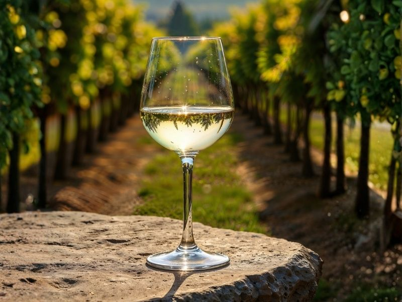
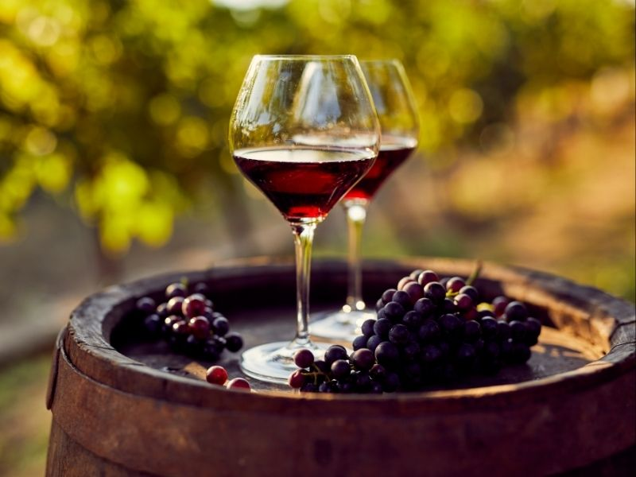
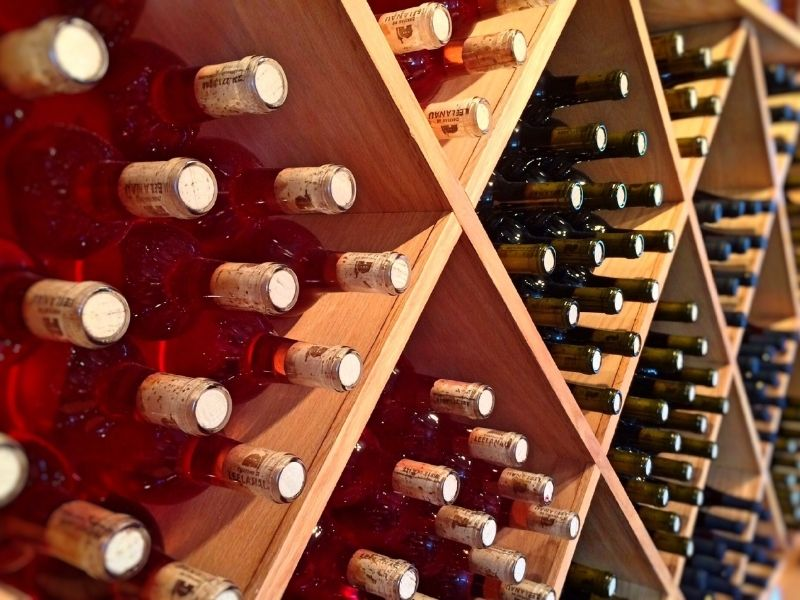

Una selección de etiquetas galardonadas nacional e internacionalmente, elaboradas meticulosamente por nuestros enólogos para satisfacer a los paladares más exigentes y conocedores.

Nuestra línea de blancos y rosados destaca por su acidez equilibrada y frescura. Encontrarás notas organolépticas que evocan cítricos, manzana verde y sutiles toques florales. Son el acompañamiento perfecto para la tarde, quesos suaves, mariscos y momentos de celebración.

Vinos tintos de gran cuerpo, estructura sedosa y elegancia innegable, resultado de un añejamiento prolongado en barricas de roble. En nariz y boca revelan complejos matices a frutos negros maduros, tabaco, vainilla y especias. Ideales para cortes de carne y gastronomía intensa.

No necesitas estar en el viñedo para disfrutar de Puerta del Lobo. Accede a nuestra boutique en línea y adquiere ediciones limitadas, paquetes de cata y cajas mixtas con envío asegurado y climatizado a cualquier parte de la República Mexicana.